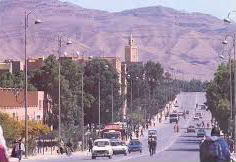

Errachidia : Capitale de la Région du Drâa-Tafilalet

La province d'Errachidia, anciennement nommée province de Ksar Es-Souk, est une subdivision à dominante rurale de la région marocaine de Drâa-Tafilalet,
Selon les décrets no 2-09-320 de 20091 et no 2-10-365 de 20105, complétant et modifiant le décret no 2-08-520 de 20086, la province d'Errachidia est composée de :
28 communes dans le cadre de la décentralisation ;
13 caïdats rattachés à 4 cercles dans le cadre de la déconcentration.
À 7 communes urbaines ou municipalités (Errachidia, chef-lieu de la province, Arfoud, Boudnib, Goulmima, Jorf, Moulay Ali Chérif et Tinejdad), s’ajoutent 21 communes rurales ainsi réparties par cercle et caïdat :
cercle d'Arfoud : caïdat d'Aarab Sebbah Ziz : Es-Fiha et Aarab Sebbah Ziz,
caïdat de Fezna-Aarab Sebah : Aarab Sebbah Gheris et Fezna ;
cercle d'Er-Rissani : caïdat d'Er-Rissani : Bni M'hamed Sijelmassa, Er-Rissani et Es-Sfalat,
caïdat d'Et-Taous : Et-Taous,
caïdat de Sidi Ali : Sidi Ali ;
cercle d'Errachidia : caïdat d'Aoufous : Aoufous et Er-Rteb,
caïdat d'Oued Naam : Oued Naam,
caïdat de M'daghra Lkeng : Chorfa M'daghra et Lkeng ;
cercle de Goulmima : caïdat d'Aghbalou N'kerdous : Aghbalou N'kerdous,
caïdat de Gheris : Gheris Es-Soufli, Gheris El Ouloui et Tadighoust,
caïdat de Melaab : Melaab,
caïdat de Ferkla : Ferkla Es-Soufla et Ferkla El Oulia,